Manent の使い方
撮って、ピンにして、書き込んで、残す。Manent の操作を、使う順に説明します。
はじめに
インストールから最初のピンを出すまでの流れです。
インストール
GitHub の Releases から、次のどちらかをダウンロードします。どちらも管理者の権限は要りません。
- インストーラ (Manent-Setup-<版>.exe)。設定の「更新」から、新しい版に入れ替えられます。
- ポータブル版 (Manent-<版>-portable.zip)。展開した exe をそのまま起動します。
Microsoft Store 版もあります。GitHub 版と Store 版はどちらか片方だけを入れてください。両方を入れると、サインイン時の起動と右クリックのメニューが二重になります。
ヒントコード署名をしていないため、初めての起動で「Windows によって PC が保護されました」と出ることがあります。「詳細情報」を押してから「実行」を押すと、起動します。
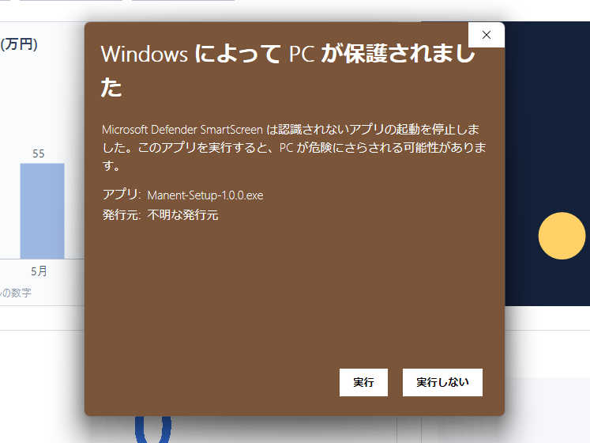
最初の 1 枚
- PrintScreen を押します。画面が止まり、範囲を選べるようになります。
- 撮りたい所をドラッグします。ドラッグを終えると、撮った場所にピンが出ます。
- ピンにカーソルを載せると、ツールバーが出ます。コピー・保存・書き込みはここから始めます。
- 閉じるときは、ピンをクリックしてから Esc を押します。ツールバーの閉じるボタンでも閉じます。
撮った画像は、ピンが出る前にクリップボードにも入ります。ほかのアプリに、そのまま貼り付けられます。
トレイのアイコン
Manent はトレイに常駐し、サインインすると自動で起動します。止めたいときは、設定の「サインイン時に起動」をオフにします。
アイコンをクリックすると、静止画を撮り始めます。PrintScreen を押したときと同じです。
右クリックすると、メニューが開きます。静止画キャプチャ、動画キャプチャ、開いているピンの一覧、設定、終了を選べます。
メニューは ↑ ↓ で選び、Enter で実行します。Esc を押すと、何もせずに閉じます。
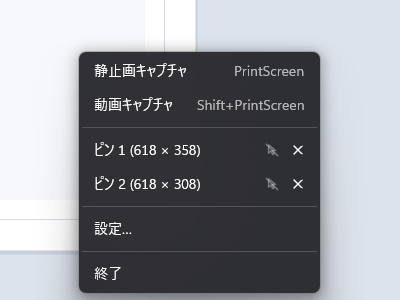
撮る
静止画と動画の撮り方と、範囲の選び方です。
静止画と動画のキー
静止画は PrintScreen、動画は Shift+PrintScreen で撮ります。どちらのキーも設定の「ホットキー」で変えられます。
ヒントManent は PrintScreen と Shift+PrintScreen を受け取り、ほかのアプリには渡しません。ゲームなど前面のアプリで PrintScreen を使うときは、設定の「PrintScreen キーで撮る」をオフにします。
ヒント「PrintScreen キーで撮る」をオフにしても、静止画は撮れます。設定の「Windows の PrintScreen で撮る」の「開く…」を押し、Windows の既定のアプリで Manent を選びます。すると、PrintScreen と Win+Shift+S で静止画を撮れます。キーは前面のアプリにも届きます。
範囲を選ぶ
静止画のキーを押した瞬間に、すべてのモニタの画面が止まります。メニューやツールチップのように、すぐ消えるものも撮れます。
撮りたい所をドラッグすると、四角い範囲を撮ります。ドラッグの間は、範囲の大きさが px で出ます。
動画のキーでは画面を止めません。動いている画面の上で範囲を選びます。
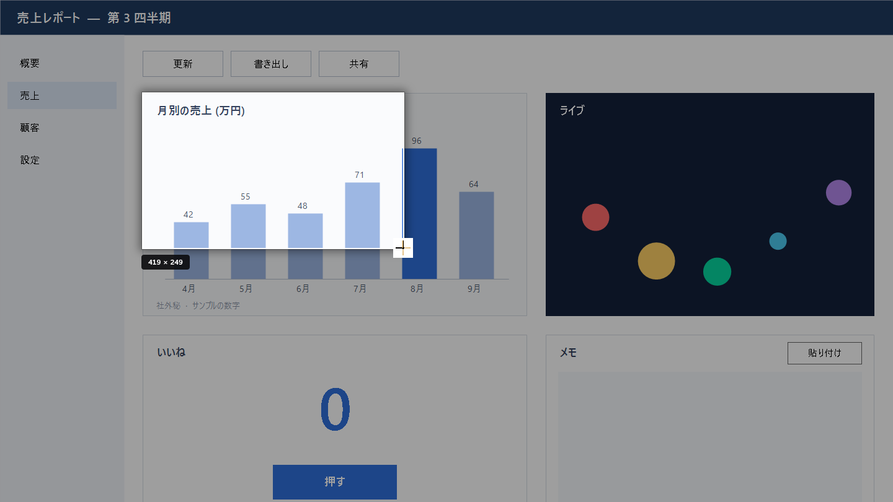
Ctrl で窓や部品を選ぶ
Ctrl を押している間は、カーソルの下の窓や部品が光ります。部品とはボタンや一覧、入力欄などです。
光っている所をクリックすると、その範囲を撮ります。Ctrl を押さずにクリックしても、何も撮りません。
ホイールを回すと、光る範囲が外側の部品や内側の部品に移ります。
ドラッグのときも Ctrl を押していれば、範囲の辺が窓や部品の端に吸い付きます。
| 操作 | キー |
|---|---|
| 窓や部品を光らせる | Ctrl を押している間 |
| 光っている範囲を撮る | Ctrl+クリック |
| 外側・内側の部品に移る | Ctrl+ホイール |
| 辺を吸い付けて範囲を作る | Ctrl+ドラッグ |
| 撮るのをやめる | Esc |
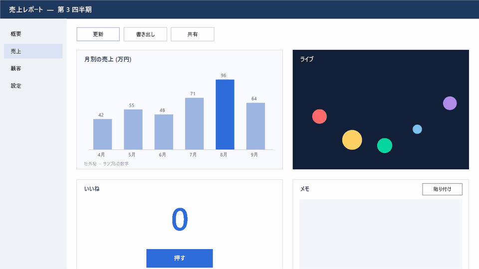
ほかの始め方
トレイのアイコンをクリックしても、静止画を撮り始めます。
Manent が動いている間は、タスクバーに固定した Manent のボタンを押しても、静止画を撮り始めます。
タスクバーの Manent のボタンを右クリックすると、静止画キャプチャと動画キャプチャを選べます。
画像のファイルをピンにするときは、エクスプローラで右クリックし、「Manent でピン留め」を選びます。2 フレーム以上の GIF は GIF のピンになります。
動画のファイル (MP4・MOV・WebM・MKV・AVI) も、同じ操作で GIF のピンになります。録画の上限より長い動画では、開く範囲を選ぶ窓が出ます。
ヒントWindows 11 の右クリックのメニューでは、「Manent でピン留め」は「その他のオプションを確認」の中にあります。Microsoft Store 版では最初のメニューにも出ます。
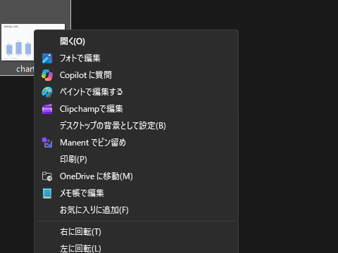
ピン
ピンの移動と拡大・縮小、不透明度、クリックを下の窓へ通す使い方です。
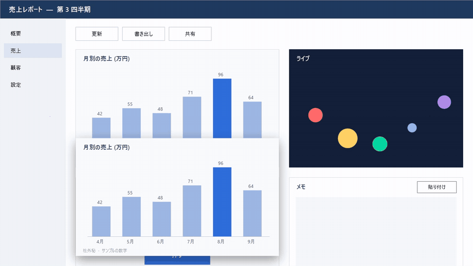
ツールバー
ピンにカーソルを載せると、ツールバーが出ます。
ボタンは左から、コピー、保存、注釈、不透明度、拡大率、元の位置と拡大率に戻す、閉じるの順に並びます。ボタンにカーソルを載せると、名前がツールチップに出ます。
左右反転、クリックを下の窓へ、最前面の 3 つは、右クリックのメニューにあります。
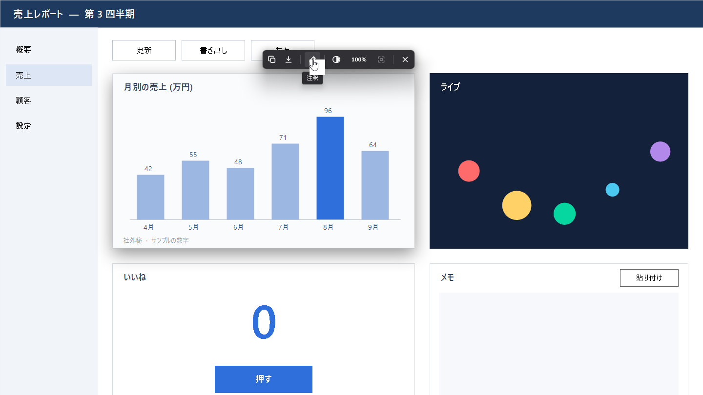
動かす・拡大と縮小
ピンはドラッグで動かします。
画像の上でホイールを回すと、カーソルの下を中心に拡大・縮小します。Ctrl+0 を押すと、等倍に戻ります。
ツールバーの拡大率のボタンには、今の拡大率が出ます。押すと 400〜25 % の一覧が開き、選んだ拡大率になります。ボタンの上でホイールを回すと、1 ノッチで 1.25 倍ずつ変わります。
縮小は 10 % まで、拡大は 8 倍までです。ピンは画面の 1 px を 1 px で映し、DPI の違うモニタへ動かしても等倍のままです。
縁のドラッグ
画像の角か辺をドラッグすると、表示の大きさが変わります。既定では縦横比を保ちます。
Shift を押しながらドラッグすると、縦横比を保たずに伸ばします。辺は引いた向きにだけ伸びます。角か辺をダブルクリックすると、元の縦横比に戻ります。
設定の「ピンの縦横比を保つ」をオフにすると、Shift の働きが逆になります。
掴めるのは、画像の内側の縁です。注釈モードの間と、クリックを下の窓へ通している間は掴めません。
不透明度
ツールバーの不透明度のボタンを押すと、不透明度を変えるポップアップが開きます。
画像の上で Shift+ホイール を回しても変わります。1 ノッチで 10 ずつ、20 から 100 までです。
ピンを薄くすると、下の画面と重ねて見比べられます。
クリックを下の窓へ
右クリックのメニューで「クリックを下の窓へ」を選ぶと、ピンの上のクリックが下の窓に届きます。ピンを見ながら、下のアプリを操作できます。
クリックを通している間は、ピンの左上に印が出ます。印を押すと、クリックがピンに戻ります。印を右クリックすると、右クリックのメニューが開きます。
トレイのメニューのピンの行にある「クリックをピンに戻す」でも、クリックがピンに戻ります。
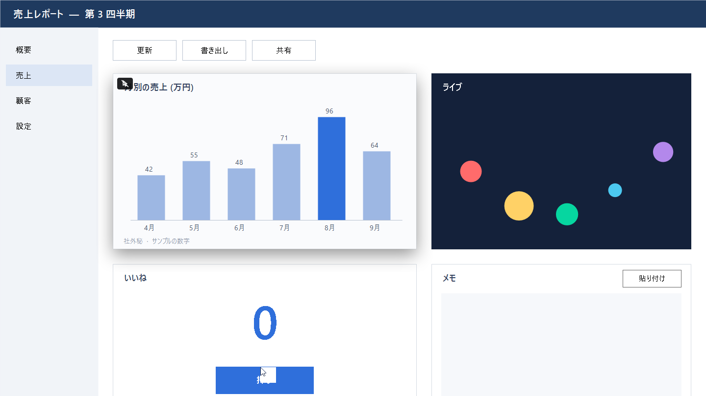
右クリックのメニュー
画像を右クリックすると、メニューが開きます。項目はコピー、保存、左右反転、クリックを下の窓へ、最前面、最小化、閉じるです。行の右にキーが出ます。
「クリックを下の窓へ」と「最前面」は、オンのとき行の左にチェックが付きます。選ぶたびに、オンとオフが替わります。
「左右反転」を選ぶと、画像と注釈が左右に反転します。コピーと保存も、反転した絵になります。もう一度選ぶと戻ります。
↑ ↓ で行を選び、Enter で実行します。Esc を押すか外をクリックすると、何もせずに閉じます。
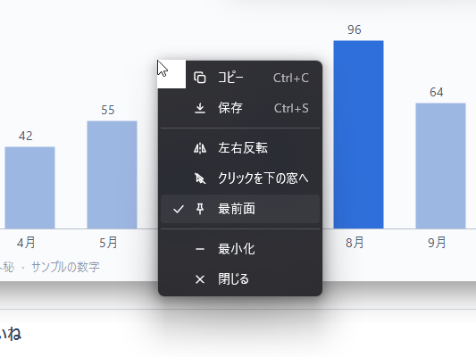
タスクバーと最小化
ピンは 1 枚ごとに、タスクバーと Alt+Tab に窓として出ます。題は「ピン 1 (640 × 360)」の形で、番号はトレイのメニューと同じです。
タスクバーのボタンを押すと、最小化と復元をします。右クリックのメニューの「最小化」でも最小化します。
復元すると、ピンは同じ場所に、同じ拡大率と不透明度で戻ります。
元の位置と拡大率に戻す
ツールバーの「元の位置と拡大率に戻す」を押すと、ピンを出したときの位置と拡大率に戻ります。撮ったピンは撮った場所に等倍で、ファイルから開いたピンは開いたときの場所と拡大率で戻ります。
ピンを動かしておらず、拡大や縮小もしていないときは、このボタンを押せません。
閉じる
ピンをクリックしてから Esc を押すと、ピンが閉じます。ツールバーの閉じるボタンと、右クリックのメニューの「閉じる」でも閉じます。
Ctrl+X を押すと、画像をコピーしてからピンを閉じます。
トレイのメニューでも、ピンの行の「閉じる」で閉じられます。
設定の「Esc キーでピンを閉じる」をオフにすると、Esc ではピンが閉じません。
注意ピンを閉じると、元に戻せません。Manent を終了したときも、ピンは残りません。
書き込む
矢印・テキスト・モザイクなどをピンの上に書き込みます。
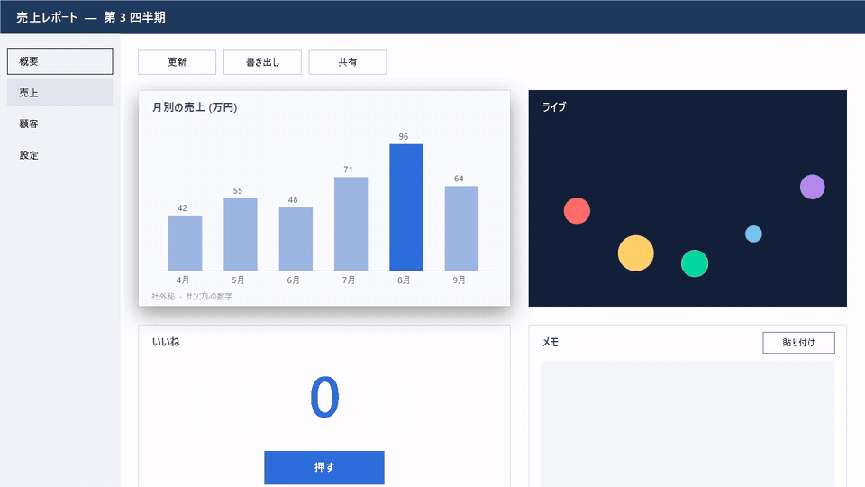
ツール
ツールバーの「注釈」を押すと、注釈モードに入ります。ツールバーが左へ広がり、書き込む道具が並びます。
道具は選択、矢印、直線、矩形、楕円、テキスト、番号バッジ、ペン、蛍光ペン、モザイクの 10 種類です。注釈モードに入ると、最後に使った道具で始まります。
番号バッジは、置くたびに番号が 1 つずつ増えます。バッジを全部消すと、次のバッジは 1 から数え直します。
Ctrl+Z で元に戻し、Ctrl+Y か Ctrl+Shift+Z でやり直します。ツールバーの「元に戻す」と「やり直す」も同じです。
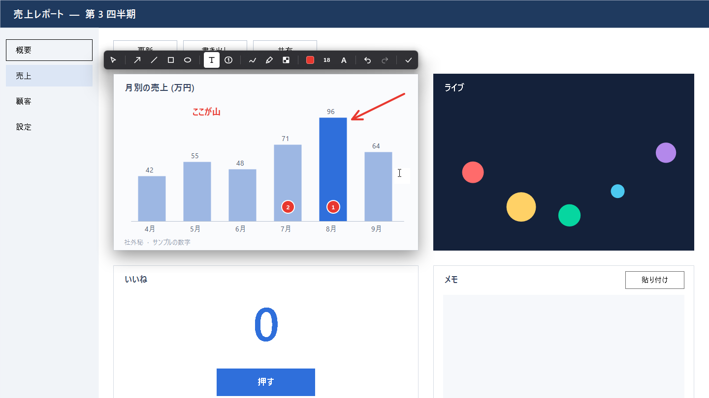
選ぶ・動かす・消す
選択の道具で注釈をクリックすると、その注釈を選びます。空いた所からドラッグすると、囲んだ注釈をまとめて選びます。Ctrl+クリック で、選択に足したり外したりします。
選んだ注釈はドラッグで動かし、Delete で消します。Ctrl+C で覚え、Ctrl+X で覚えて消し、Ctrl+V で貼り付けます。
1 つだけ選ぶとハンドルが出て、ハンドルを引くと大きさが変わります。テキストと番号バッジには、ハンドルが出ません。
描く道具のときは、注釈の上を押しても新しく描きます。
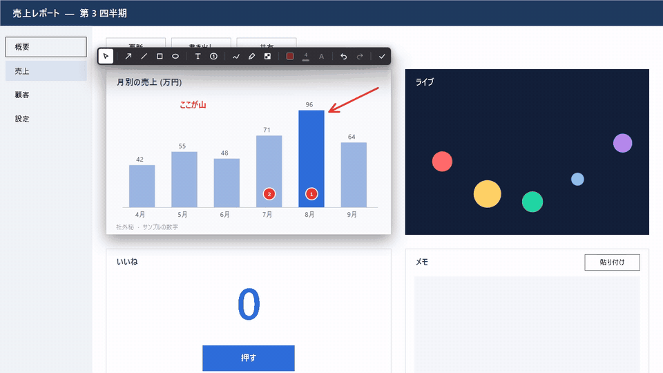
色と線幅
色は赤、オレンジ、黄、緑、青、黒、白の 7 色から選びます。
線幅のボタンには今の線幅の数字と、その太さの線が出ます。テキストの道具のときは、「文字の大きさ」のボタンになります。モザイクでは、線幅で升の粗さが変わります。
選択の道具で注釈を選んでいるときは、ボタンに選んだ注釈の値が出ます。ここで選んだ値に、選んだ注釈が揃います。値が混ざっているときは、ポップアップに「混在」と出ます。
文字の装飾
文字の装飾はなし、縁取り、背景の 3 つから選びます。ボタンは線幅のボタンの右にあり、テキストの道具のときと、テキストを選んでいるときに押せます。
縁取りと背景の色は文字の色に合わせて、白か黒が自動で選ばれます。次に置くテキストには最後に選んだ装飾が付きます。
塗りつぶし
矩形と楕円の道具のときは、文字の装飾のボタンが「塗りつぶし」のボタンになります。押すたびに、塗るか塗らないかが替わります。
塗りの色は線の色と同じです。次に描く図形には最後に選んだ塗りが使われます。
テキストの入力
テキストの道具で画像を押すと、押した所に文字を打てます。日本語の入力もできます。Enter を押すと確定し、Shift+Enter で改行します。
打っている間にピンのほかの所を押すと、今の文字を確定して、押した所で次の入力を始めます。
確定したテキストは選択の道具でダブルクリックすると打ち直せます。入力中は、Ctrl+A ですべてを選び、Ctrl+Backspace で左の 1 語を消します。
完了とコピー
ツールバーの「完了」を押すか Esc を押すと、注釈モードを抜けます。このとき、注釈を合成した絵がクリップボードに入ります。
ほかのピンを押して抜けたときは、クリップボードに入りません。
注釈はピンの上に残り、コピーと保存の絵に合成されます。注釈モードに入り直すと、選んで直せます。
ピンのグループ
何枚かのピンをグループにして、一緒に動かします。
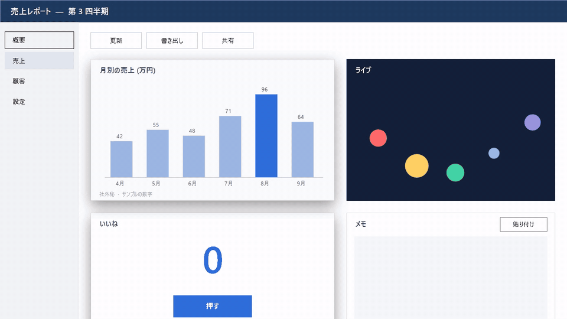
選ぶ
Ctrl+クリック でピンを選びます。もう一度押すと外れます。選んだピンには、画像の外にハイライトが、左上に印が出ます。
2 枚以上選ぶと、まとめて動かせます。選んでいないピンを Ctrl を押さずに押すと、選択が全部外れます。
注釈モードの間の Ctrl+クリック は、注釈を選ぶ操作です。
グループにする
2 枚以上選んだら、Ctrl+G を押すか、ツールバーの左端の「グループ化」を押します。選んだピンが 1 つのグループになります。
グループはほかのピンを押しても解けません。静止画のピンと GIF のピンを同じグループに入れられます。
グループを解くときは、グループのピンで Ctrl+G を押すか、ツールバーの左端のグループのボタンを押します。
一緒に動く操作
グループのピンは移動、最小化と復元、不透明度、クリックを下の窓へ、画像の上のホイールの拡大・縮小を一緒に受けます。ホイールでは、カーソルを中心に、全部のピンが同じ比で大きさを変えます。
ツールバーはグループの中でいちばん手前の静止画のピンに出ます。グループのツールバーでは、注釈と「元の位置と拡大率に戻す」を押せません。
GIF のピンは自分のツールバーを出します。グループの GIF のピンでも、注釈と「元の位置と拡大率に戻す」を押せません。
グループのピンにカーソルを載せると、同じグループのピンに破線の枠が出ます。
1 枚だけ動かす
Alt+ドラッグ で、グループに入れたまま 1 枚だけを動かせます。
グループのピンは、押しても重なりの順が変わりません。
閉じる
グループのピンで閉じるボタンを押すか Esc を押すと、一覧が出ます。「このピンだけ閉じる」か「グループごと閉じる」を選びます。外をクリックするか、もう一度 Esc を押すと、閉じずに一覧が消えます。
Shift+Esc を押すと、一覧を出さずにグループごと閉じます。グループのピンが 1 枚になると、グループは消えます。
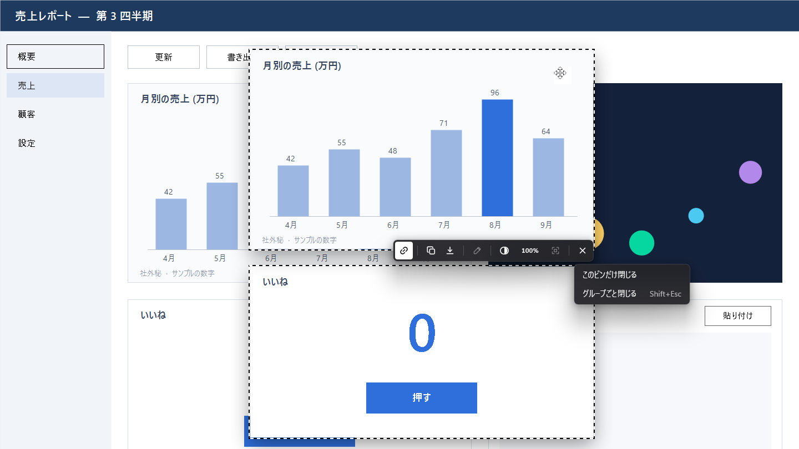
タスクバー
タスクバーには、グループごとに 1 つのボタンが出ます。題は「グループ 1 (3 枚)」の形です。
このボタンで、グループごと最小化と復元をします。グループを解くと、ボタンはピンごとに戻ります。
動画と GIF ピン
範囲を録画して GIF のピンにし、前後を切り詰めます。
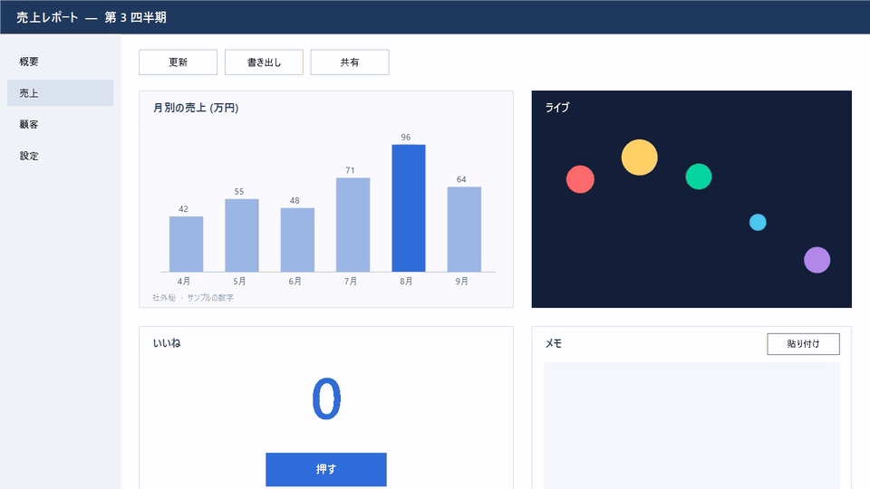
録画する
Shift+PrintScreen を押して、録る範囲をドラッグします。動画のキーでは、画面は止まりません。
範囲を決めると、範囲の中央でカウントダウンが始まります。既定は 3 秒です。Enter を押すとすぐに録画を始め、Esc を押すと録画をやめます。
範囲が 2 つのモニタにまたがるときは、左上のモニタの分だけを録ります。
録画中
録画の間は、範囲に赤い枠が、その近くに録画バーが出ます。録画バーには、残りの時間が出ます。残りの時間にカーソルを載せると、経過した時間が出ます。
止めるときは、もう一度 Shift+PrintScreen を押すか、録画バーの停止のボタンを押します。録画の上限 (既定は 60 秒) に届いても止まります。
録画バーの一時停止のボタンを押すと、録画を止めます。同じボタンで再開します。止めている間はコマを撮らず、残りの時間も減りません。
枠と録画バーは、録画に写りません。止めると、録った場所に GIF のピンが出ます。
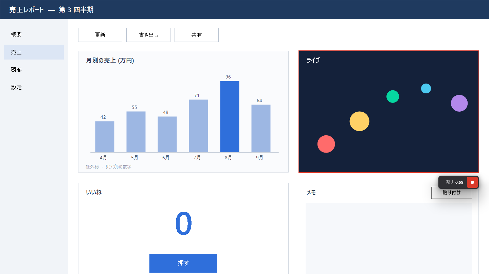
タイムライン
GIF のピンの下の帯で、再生と停止、フレームの移動をします。Space で再生と停止をし、← → で 1 フレームずつ動きます。帯をクリックすると、その位置に移ります。
Shift+← Shift+→ では、前のフレームと違いの無いフレームを飛ばします。
再生のボタンの左には最初のフレームへ移るボタンが、右には最後のフレームへ移るボタンとループのボタンがあります。ループは既定でオンです。オフにすると、最後のフレームで再生が止まります。
Shift+クリック か、フィルムストリップのドラッグで、範囲を選びます。帯の両端の括弧を引くと、前後を切り詰めます。括弧を Shift+ドラッグ すると、今のフレームも括弧と一緒に動きます。
Delete を押すと、選んだ範囲のフレームを消します。範囲が無ければ、今のフレームを消します。
範囲を選んで Ctrl+C を押すと、そのフレームを覚えます。Ctrl+V を押すとメニューが出て、選んだフレームの前か後に挿入します。貼れるのは同じピンの中だけです。挿入は Ctrl+Z で戻せます。
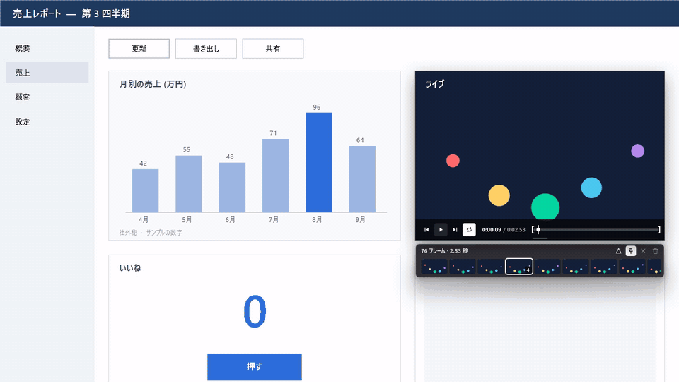
トレイ
画像の下のトレイにはフィルムストリップと、フレームの数と秒数が出ます。
トレイの右上の「タイムラインを常に表示」がオンの間は、ピンから離れても、トレイと帯を隠しません。既定はオンです。オフにすると、カーソルを載せたときだけ出ます。
トレイの「選択を解除」を押すと、選んだ範囲が外れます。範囲があるときは、Esc でもまず範囲が外れます。
書き出しの寸法とサイズ上限
ツールバーのオプションのボタンを押すと、「書き出しの寸法」が開きます。
「倍率」は100、75、50、33、25 % から選びます。GIF のコピーと保存がこの大きさになります。
「サイズ上限」はなし、25、10、5、3、1 MB から選びます。GIF が上限を超えると、フレームレートと倍率を下げて作り直します。下げ切っても超えたときは、そのまま書き出して、帯で知らせます。
選んだ倍率とサイズ上限は、次の GIF のピンにも使われます。
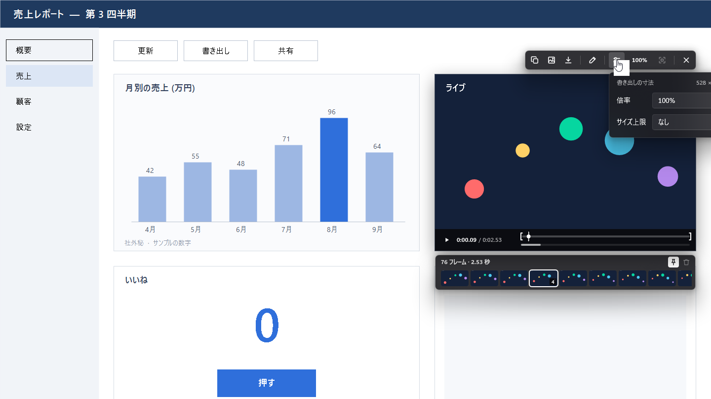
GIF に書き込む
ツールバーの「注釈」を押すと、静止画のピンと同じ 10 種類の道具を使えます。注釈モードに入ると、再生が止まります。
注釈は出すフレームの区間を持ちます。描いた直後の区間は、範囲を選んでいればその範囲で、選んでいなければ全体です。
注釈を選んでいる間は、フィルムストリップで選んだ範囲が、その注釈の区間になります。Ctrl+クリック で、フレームを 1 つずつ区間に足したり外したりできます。
トレイの「区間外の注釈」をオンにすると、区間の外のフレームでも、注釈が薄く出ます。
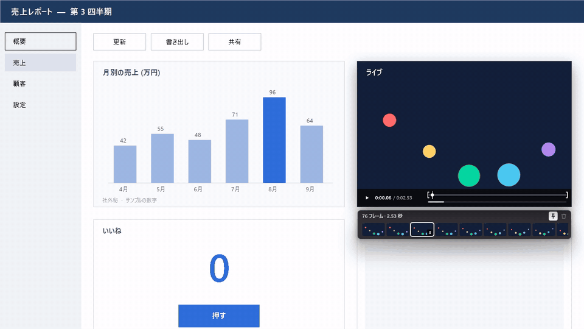
コピーと保存
撮った画像と GIF をクリップボードやファイルに書き出します。
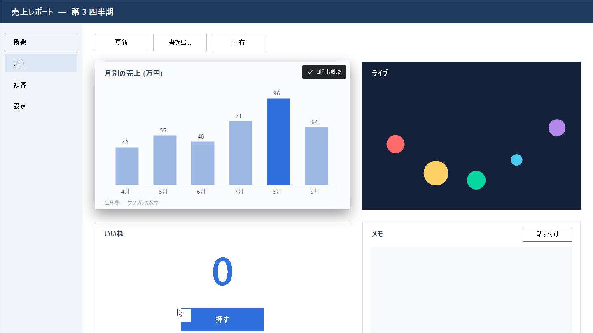
撮った直後のコピー
静止画は撮った直後にクリップボードに入り、それからピンになります。
注釈モードを「完了」か Esc で抜けたときも、注釈を合成した絵がクリップボードに入ります。
GIF は自動ではクリップボードに入りません。
コピー
ピンをクリックしてから Ctrl+C を押すと、画像をコピーします。ツールバーと右クリックのメニューの「コピー」も同じです。
注釈はコピーする絵に合成されます。
保存
Ctrl+S を押すか、ツールバーの「保存」を押すと、ダイアログを出さずに保存します。静止画は PNG、GIF のピンは GIF で保存します。
保存先は設定の「保存先フォルダ」で、既定はピクチャです。ファイルの名前は設定の「ファイル名」で決まります。
名前とフォルダを選ぶときは、Ctrl+Shift+S を押して保存のダイアログを開きます。ファイルには手で保存したときだけ書き出します。
GIF のコピーと今のフレーム
GIF のピンで Ctrl+C を押すと、GIF のファイルとしてコピーします。GIF を受け取るアプリや、エクスプローラに貼り付けられます。フレームの範囲を選んでいるときは、GIF ではなくフレームを覚えます (「タイムライン」の節)。
ツールバーと右クリックのメニューの「今のフレームをコピー」は、出ているフレームを静止画としてコピーします。キーは Ctrl+Shift+C です。
GIF を作るのに時間がかかるときは、画像の右上に「GIF を作成中…」の帯が出ます。その間は、コピーと保存のボタンを押せません。
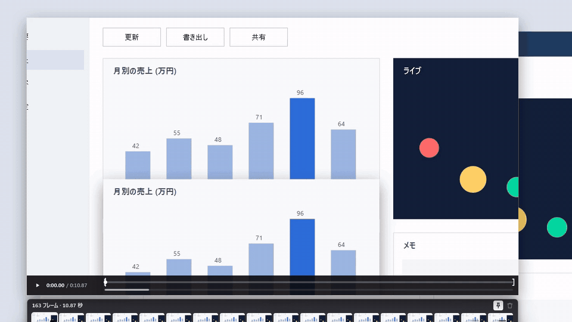
グループのコピーと保存
グループのピンでコピーか保存をすると、グループのピン全部を画面の並びと重なりのまま 1 枚にします。GIF のピンは今のフレームを使います。
ピンの無い所は、保存した PNG では透明になります。
コピー・保存の帯
コピーや保存が終わると、画像の右上に帯が出ます。「コピーしました」か「保存しました」と出て、GIF ではファイルの大きさも出ます。
サイズ上限に収めるためにフレームレートや倍率を下げたときは、帯の 2 行目に下げた値が出ます。
失敗したときと、上限を超えたときは、赤い帯で知らせます。帯は録画と画面のキャプチャに写りません。
設定
設定の窓の項目と、それぞれの既定の値です。
設定の窓はトレイのアイコンを右クリックして、「設定…」で開きます。左の 4 つのセクションから選びます。
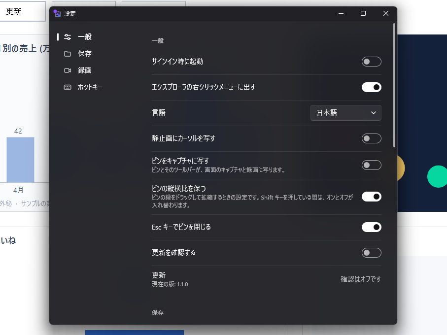
一般
| 項目 | 既定 |
|---|---|
| サインイン時に起動 | オン |
| エクスプローラの右クリックメニューに出す | オン |
| 言語 | 自動 |
| 静止画にカーソルを写す | オフ |
| ピンをキャプチャに写す | オフ |
| ピンの縦横比を保つ | オン |
| Esc キーでピンを閉じる | オン |
| 更新を確認する | オン |
「ピンをキャプチャに写す」をオンにすると、ピンとそのツールバーが、画面のキャプチャと録画に写ります。
「更新」の行には、更新を確かめた結果が出ます (「更新」の章)。Microsoft Store 版には、「更新を確認する」と「更新」の行がありません。
保存
「保存先フォルダ」は Ctrl+S で保存するフォルダです。既定はピクチャで、「変更…」で選び直せます。
録画
| 項目 | 既定 |
|---|---|
| フレームレート | 30 fps |
| 録画の上限 | 60 秒 |
| 動画にカーソルを写す | オン |
| 録画前のカウントダウン | 3 秒 |
フレームレートは 10、15、20、30、60 fps から選びます。録画の上限は 10 秒から 5 分まで、カウントダウンはオフか 1〜10 秒から選びます。
ホットキー
| 項目 | 既定 |
|---|---|
| 静止画キャプチャ | PrintScreen |
| 動画キャプチャ | Shift+PrintScreen |
| PrintScreen キーで撮る | オン |
| Windows の PrintScreen で撮る | 未設定 |
キーを変えるときは、行を押してから新しいキーを押します。Esc で取り消し、Backspace で未割当てにし、Delete で既定に戻します。
キーによっては、Ctrl・Alt・Shift・Win のどれかと一緒に押す必要があります。ほかのアプリが使っているキーは割り当てられません。
PrintScreen の 2 つの行は、「撮る」の章の「静止画と動画のキー」で説明しています。
更新
新しい版の知らせ方と、更新のしかたです。
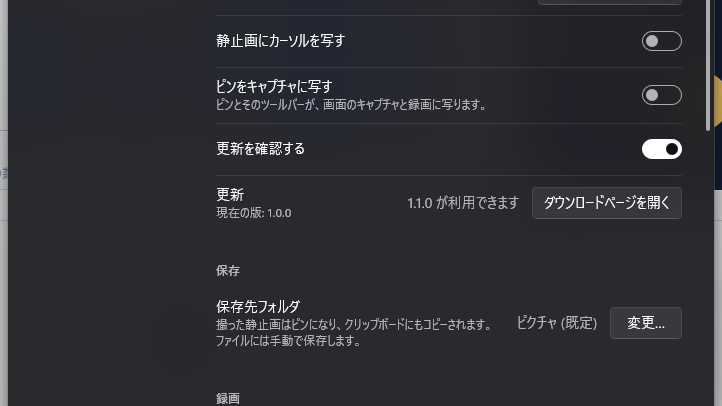
更新の確認
Manent は起動の 15 秒後と、その後 24 時間ごとに、GitHub に新しい版があるかを確かめます。
新しい版があると、トレイの通知が出ます。通知をクリックすると、設定の窓が開きます。
設定の「更新」の行には「最新版です」や「1.1.0 が利用できます」のように、確かめた結果が出ます。
更新のしかた
インストーラで入れた Manent では、「更新」の行の「更新」を押します。新しいインストーラをダウンロードして起動し、Manent は終了します。
ポータブル版では、「ダウンロードページを開く」を押して、新しい版をダウンロードします。展開した exe で、今の exe を置き換えます。
Microsoft Store 版は、ストアが更新します。
通信
更新を確かめるときは、GitHub の API に最新の版を問い合わせます。送るのはこの問い合わせだけで、今の版の番号を含みます。
設定の「更新を確認する」をオフにすると、外には何も送りません。
困ったとき
よくあるつまずきと、その直し方です。
- PrintScreen を押しても撮れない
- 設定の「PrintScreen キーで撮る」がオフだと、Windows の設定によってはキーが切り取りツールに届きます。オンにするか、設定の「ホットキー」で別のキーを選びます。
- 「ホットキーを登録できませんでした」と出る
- ほかのアプリが同じキーを使っています。設定の「ホットキー」で別のキーを選びます。
- 右クリックのメニューに「Manent でピン留め」が無い
- 「その他のオプションを確認」の中にあります。設定の「エクスプローラの右クリックメニューに出す」がオンになっているかも確かめます。
- 画面の録画や共有にピンが写らない
- 既定では写りません。設定の「ピンをキャプチャに写す」をオンにします。
キーの一覧
Manent で使うキーを 1 つの表にまとめました。
撮る
| 操作 | キー |
|---|---|
| 静止画を撮る | PrintScreen |
| 動画を撮る・録画を止める | Shift+PrintScreen |
| カウントダウンをとばす | Enter |
| 窓や部品を光らせる | Ctrl を押している間 |
| 光っている範囲を撮る | Ctrl+クリック |
| 外側・内側の部品に移る | Ctrl+ホイール |
| 辺を吸い付けて範囲を作る | Ctrl+ドラッグ |
| 撮るのをやめる | Esc |
ピン
| 操作 | キー |
|---|---|
| コピー | Ctrl+C |
| 保存 | Ctrl+S |
| 名前を付けて保存 | Ctrl+Shift+S |
| 閉じる | Esc |
| コピーして閉じる | Ctrl+X |
| グループごと閉じる | Shift+Esc |
| 拡大・縮小 | ホイール |
| 等倍に戻す | Ctrl+0 |
| 不透明度を変える | Shift+ホイール |
| 縦横比を保たずに伸ばす | 縁を Shift+ドラッグ |
| ピンを選ぶ・外す | Ctrl+クリック |
| グループにする・解く | Ctrl+G |
| グループのまま 1 枚だけ動かす | Alt+ドラッグ |
書き込み
| 操作 | キー |
|---|---|
| 元に戻す | Ctrl+Z |
| やり直す | Ctrl+Y、Ctrl+Shift+Z |
| 選んだ注釈を覚える | Ctrl+C |
| 覚えて消す | Ctrl+X |
| 貼り付ける | Ctrl+V |
| 選んだ注釈を消す | Delete |
| 選択に足す・外す | Ctrl+クリック |
| テキストで改行する | Shift+Enter |
| 完了してコピーする | Esc |
GIF ピン
| 操作 | キー |
|---|---|
| 再生・停止 | Space |
| 1 フレーム動く | ← → |
| 違いのあるフレームへ動く | Shift+← Shift+→ |
| 範囲を選ぶ | Shift+クリック |
| 範囲を外す | Esc |
| フレームを消す | Delete |
| GIF をコピーする | Ctrl+C |
| 範囲のフレームを覚える | 範囲を選んで Ctrl+C |
| 覚えたフレームを挿入する | Ctrl+V |
| 今のフレームをコピーする | Ctrl+Shift+C |
| 保存 | Ctrl+S |
| 名前を付けて保存 | Ctrl+Shift+S |
メニュー
| 操作 | キー |
|---|---|
| 行を選ぶ | ↑ ↓ |
| 実行する | Enter |
| 何もせずに閉じる | Esc |